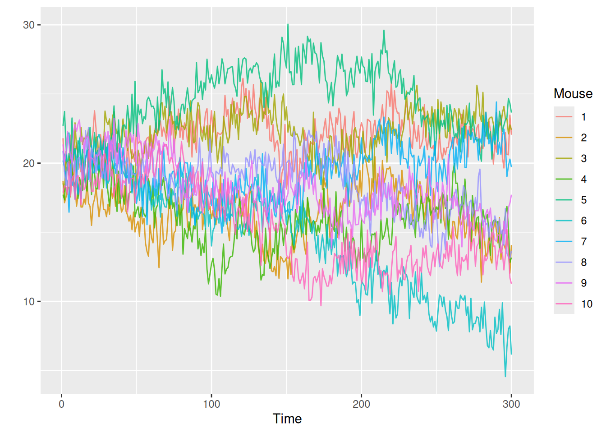

library(ggplot2)
set.seed(1)
# true model -----------------------------------------------------------
#based on Hierarchical Dynamic Models Marina Silva Paez and Dani Gamerman
n = 10 # sample size
T = 300 # observations (time)Dynamic Hierarchical Model Simulations
https://www.researchgate.net/publication/266226633_Hierarchical_Dynamic_Models
Observation Equations
\[ \begin{aligned}y_{it} =level_{i} + trend_{it} + Seasonality_{it} + Spike \,Prob_{it} * Spike\, Amplification_{it} + \epsilon_{it} \newline \epsilon \sim Normal(0,sd_y) \newline where \; Seasonality_{it} \; is\; given\; by \; Seasonality_{it} = A_i \,(sin(\frac{2\pi} {P_i}) + \phi_i) \end{aligned} \]
# parameters for observation equations
sd_y = 0.01Structural Equations (Hierarchical Setup)
\[ \begin{aligned}level_i \sim Normal(level, sd_{level})\newline trend_{it} \sim Normal(trend_{t} ,sd_{mu})\newline A_i \sim Normal(A ,sd_A) \newline B_i \sim Normal(B, sd_B) \newline \phi_i \sim Normal(\phi, sd_{phi})\end{aligned} \]
$$
# parameters for structural equations
level = 10
sd_level = 0.8
sd_mu = 0.5 # mu for trend
A = 0.5
P = 50
phi = 5
sd_A = 0.01
sd_P = 0.5
sd_phi = 0.8
sd_season = 0.8# parameters for system equations
sd_mu_t = 0.3
# seasonal period
p = 0.01
mean_amp = 1
sd_amp = 0.01
# initial values for group level parameters
season0 = 0.3
amp0 = 0.8
mu0= 10System Equations (Latent State Model)
\[ \begin{aligned}trend_t \sim Normal(trend_{t-1} , sd_{mu\, , t }) \newline Spike \,Prob_{it} \sim \text{i.i.d. } Bernoulli(p) \newline Spike\, Amplification_{it} \sim \text{i.i.d} \, Abs \,(Normal\,(0, sd_{Amp})) \end{aligned} \]
\[ trend_ \]
data = list()
for(i in 1:n){
# time dependent parameters (mean parameters)
mu_t = numeric(T) ; mu_t[1] = mu0
for(t in 2:T){
# System Equations
mu_t[t] = mu_t[t-1] + rnorm(1,0,sd_mu_t)
}
# structural equations
level_i = level + rnorm(1,0,sd_level)
mu_it = mu_t + rnorm(t,0,sd_mu)
A_i = A + rnorm(1,0,sd_A)
P_i = P + rnorm(1,0, sd_P)
phi_i = phi + rnorm(1,0, sd_phi)
prob_it = rbinom(300,1,p)
amp_it = abs(rnorm(T,mean_amp, sd_amp))
season_it = A_i * sin(2 * pi * (1:T) /P_i + phi_i) + rnorm(t,0,sd_season)
# observation equations
y = level_i + mu_it + season_it + prob_it*amp_it + rnorm(t,0,sd_y)
data[[i]] = data.frame(mouse = i, time = 1:T, y = y)
}
sim_data = do.call(rbind,data)
ggplot(data = sim_data, aes(x = time, y = y, color = factor(mouse))) +
geom_line(alpha = 0.8) +
labs(x = 'Time',
y = '',
color = 'Mouse')